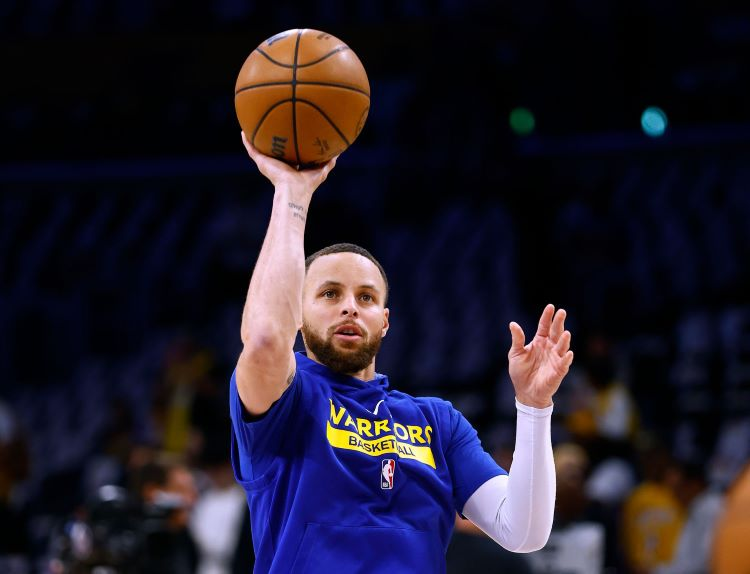

Top 3 𝓑𝓪𝓼𝓴𝓮𝓽𝓫𝓪𝓵𝓵 𝓖𝓸𝓪𝓽𝓼!
Kobe Bryant
My Carrer Stats
- His parents named him after a type of steak. The beef is from a species of cattle, Wagyu, raised in the Kobe region of Japan.
- Bryant lived in Italy for eight years while his father played in the Italian Professional Basketball League. Bryant spoke Italian fluently!
- Nominated for one Academy Award and won. He entered the NBA straight out of high school.
Stephen Curry!

My Carrer Stats
- His real name is Wardell Stephen Curry II!
- He was born in Akron, Ohio.
- His parents are both former athletes.
- His sister, Sydel, plays volleyball at Elon University.
LeBron James!
My Carrer Stats
- LeBron James Was a Basketball Star in High School.
- LeBron Used to Play Football.
- He's Left-Handed.
- Basketball Saved His Childhood.
Hope you enjoyed this website!